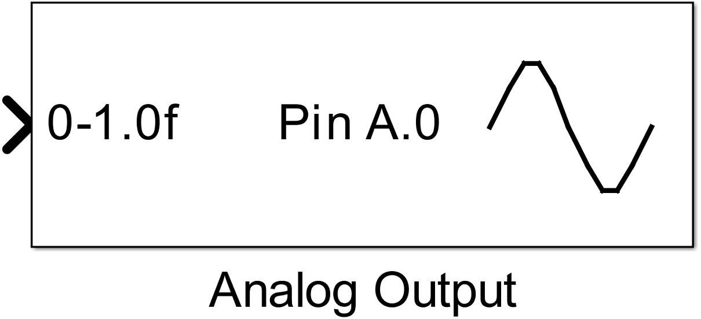
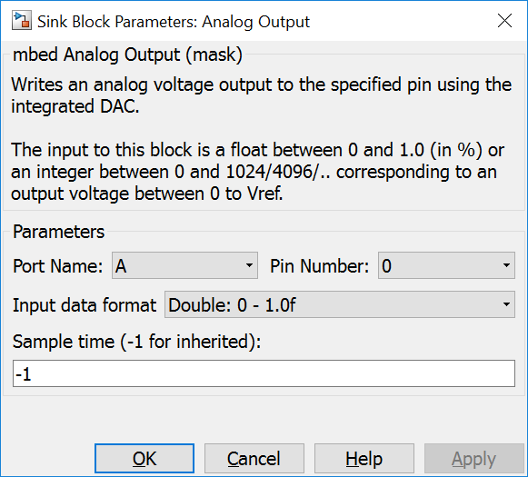
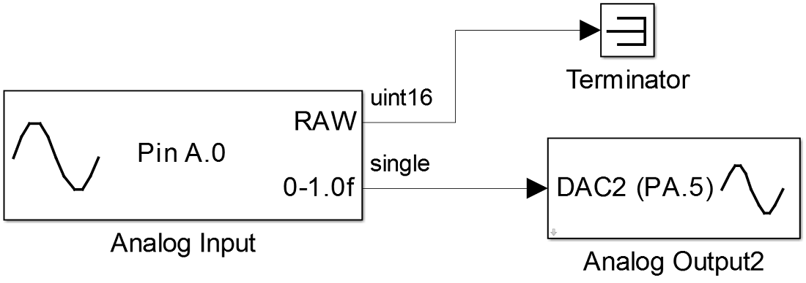

4.6. Analog Output
4.6.1. Description
Creates an analog voltage output at the specified analog ouput pin using an integrated DAC.
The input to this block is a real32 float between 0 and 1.0 (in %) or an uint16 integer between 0 and 1024/4096/.. corresponding to an output voltage between 0 to Voutmax.
{kind=link}
4.6.2. Data Type Support
The input port expects values with real32 or uint16 data types.
4.6.3. Parameters Dialog Box
4.6.3.1. Port Name/Pin Number
specify the mcu pin. This block supports the naming schema: ‘P’ + letter ‘A’, ‘B’, ‘C’, … + ‘_’ + number ‘0’, ‘1’, … ‘15’, e.g. PA_0.
4.6.3.2. Input data format
specifies the data type of the input port. It can be choose between real32 and uint16.
4.6.3.3. Sample Time
specifies the time interval between samples. To inherit the sample time, set this parameter to -1.
4.6.4. Example
In the example an analog input pin is read in by an Analog Input Block. This value is written to an analog output pin by an Analog Output block.
{kind=link}
4.6.5. Code Generation
Instance names of mbed classes are created by concatenating model name (, submodelnames) and block name (<Model Name>_(<Subblock Name>_…)<Block Name>). Space and minus characters are substituted by underscore (‘_’) characters.
4.6.5.1. Global parts
creates a global instance
AnalogOut <instance name>(P<Port Name>_<Pin Number>);
in <Model Name>.cpp.
4.6.5.2. Step Function
creates one line in void <Model Name>_step(void) function
<instance name> = ((uint16_T)rvalue);
or
<instance name> = ((real32_T)rvalue);